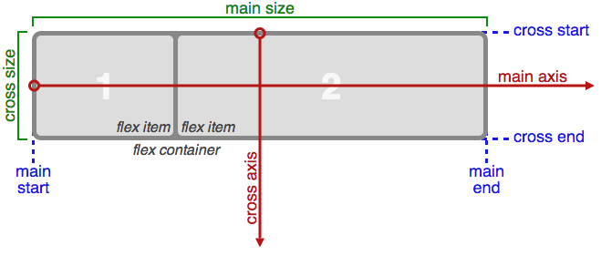

Flexbox
CSS Flexible Box Layout Module
Basics - Terminology and Solved by Flexbox
Presented by Pham Trang
Overview
layout modes
- table layout
- inline layout
- block layout
- positioned layout
Overview
flex layout simple and powerful
- laid out in any flow direction
- display order reversed or rearranged
- laid out along a single (main) axis or wrapped
into multiple lines along a secondary (cross) axis - can “flex” their sizes to respond to the available space
- can be aligned with respect to their container or each other
- dynamically collapsed or uncollapsed along the main axis
while preserving the container’s cross size
Basics - Terminology
Flex Containers
display: flex;/* or inline-flex */
Flex Containers
flex-direction: row | row-reverse | column | column-reverse;
flex-wrap: nowrap | wrap | wrap-reverse;


flex-flow: <‘flex-direction’> || <‘flex-wrap’>
Default is row nowrap.
Flex Containers
justify-content: flex-start | flex-end | center | space-between | space-around;

Flex Containers
align-content: flex-start | flex-end | center | space-between | space-around | stretch;
Flex Containers
align-items: flex-start | flex-end | center | baseline | stretch;

Some properties don’t apply
- all of the column-* properties
- the ::first-line pseudo-elements
- ::first-letter pseudo-elements
flex items
order: <'integer'>;
flex items
flex-grow: <'number'>;

flex items
flex-shrink: <'number'>;
flex-basis: <'length'> | auto;
flex: none | [ <'flex-grow'> <'flex-shrink'>? || <'flex-basis'> ]

flex items
align-self: auto | flex-start | flex-end | center | baseline | stretch;

flex items
Some properties don’t apply
- float-clear
- vertical-align
Property index
Browser support
can i use?
display: flexbox ;
Draff syntax from 2011: support IE10
Demo
Solved by Flexbox
Vertical Centering
Solved by Flexbox
Better, Simpler Grid Systems
Solved by Flexbox
The Media Object
Reference
http://www.w3.org/TR/css3-flexbox
http://css-tricks.com/snippets/css/a-guide-to-flexbox/
http://philipwalton.github.io/solved-by-flexbox/